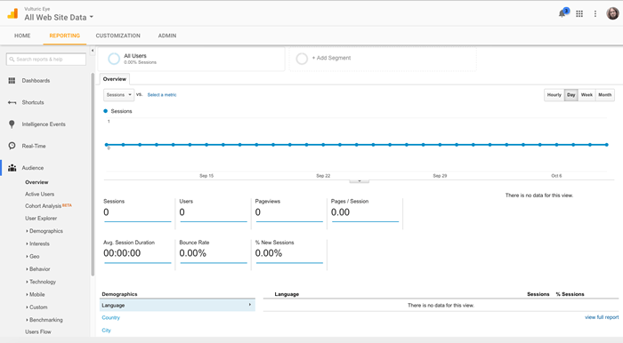
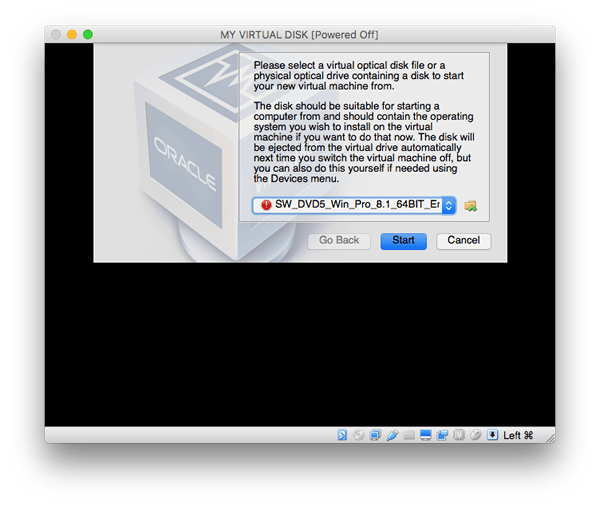

In this article we drill down into carrying out testing, looking at identifying a target audience (e.g. what browsers, devices, and other segments should you make sure are tested), lo-fi testing strategies (get yourself a range of devices and some virtual machines and do ad-hoc tests when needed), higher tech strategies (automation, using dedicated testing apps), and testing with user groups.
| Prerequisites: | Familiarity with the core HTML, CSS, and JavaScript languages; an idea of the high level principles of cross-browser testing. |
|---|---|
| Objective: | To gain an understanding of the high-level concepts involved in cross-browser testing. |
When doing cross-browser testing, you need to work out a list of browsers you will need to test on to start with. There is no way you can test on every combination of browser and device your users might use to view your site — there are just too many, and new ones appear all the time.
Instead, you should try to make sure your site works on the most important target browsers and devices, and then code defensively to give your site the widest support reach it can be expected to have.
By coding defensively, we mean trying to build in intelligent fallbacks so that if a feature or style doesn't work in a browser, the site will be able to downgrade to something less exciting that still provides an acceptable user experience — the core information is still accessible, for example, even if it doesn't look quite as nice.
The aim is to build up a chart of browsers/devices you can refer to as you test. You can make this as simple or as complex as you like — for example a common approach is to have multiple grades of support level, something like:
Throughout the following sections, we'll build up a support chart in this format.
Note: Yahoo first made this approach popular, with their Graded browser Support approach.
You could call these "assumptions", or "gut feelings". This is not an accurate, scientific approach, but as someone who has experience with the web industry you'll have a pretty good idea of at least some of the browsers you should test. This can form a good basis for a support chart.
For example, if you live in Western Europe or North America, you will know that a lot of people use Windows and Mac desktops/laptops, where the main browsers are Chrome, Firefox, Safari, IE, and Edge. You probably want to just test the latest versions of the first three, as these browsers receive regular updates. For Edge and IE, you probably want to test the last couple of versions; these should all go in the A grade tier.
Note: You can only have one version of IE or Edge installed on a machine at once, so you will probably have to use virtual machine, or other strategy to do the testing you need. See {{anch("Virtual machines")}} later on.
Lots of people use iOS and Android, so you probably also want to test the latest versions of iOS Safari, the last couple of versions of the old Android stock browser, and Chrome and Firefox for iOS and Android. You should ideally test these on both a phone and a tablet, to make sure that responsive designs are working OK.
You might also know that a number of people still use IE 9. This is old and less capable, so let's put it in the B grade tier.
This gives us the following support chart so far:
If you live somewhere else, or are working on a site that will serve somewhere else (e.g. certain countries, or locales), then you will probably have different common browsers to test.
Note: "The CEO of my company uses a Blackberry, so we'd better make sure it looks good on that" can also be a persuasive argument.
One helpful measure you can call on to inform your browser testing choices is browser support stats. There are a number of sites that provide such stats, for example:
These are both very North America-centric, and not particularly accurate, but they can give you an idea of broad trends.
For example, let's go to Netmarketshare. You can see that Opera is listed as having small but visible usage figures, so we should add it to our support chart too as grade C.
IE8 is listed as being significant too, but it is older and no longer capable. Opera Mini is also significant, but it isn't very capable in terms of running complex JavaScript at runtime, etc (see Opera Mini and JavaScript for more details). We should put this into grade B as well.
A much more accurate source of data, if you can get it, comes from an analytics app like Google Analytics. This is an application that will give you accurate stats on exactly what browsers people are using to browse your site. Of course, this relies on you already having a site to use it on, so it isn't much good for completely new sites.
But an analytics history can be useful for finding support stats to influence say a new version of a company's site, or new features you are adding to an existing site. If you have these available, they are far more accurate than global browser stats like those mentioned above.
You may also consider using open source and privacy focussed analytics platforms like Open Web Analytics and Matomo. They expect you to self-host the analytics platform.
</body> tag, or somewhere else appropriate that keeps it from getting muddled up with your application code.That's it! Your site should now be ready to start reporting analytics data.
Now you should be able to go back to the Analytics Web homepage, and start looking at the data you've collected about your site (you need to leave a little bit of time for some data to actually be collected, of course.)
By default, you should see the reporting tab, like so:

There is a huge amount of data you could look at using Google Analytics — customized reports in different categories, etc. — and we haven't got time to discuss it all. Getting started with Analytics provides some useful guidance on reporting (and more) for beginners.
You should also be encouraged to look at the different options on the left hand side, and see what kinds of data you can find out. For example, you can find out what browsers and operating systems your users are using by selecting Audience > Technology > Browser & OS from the left hand menu.
Note: When using Google analytics, you need to beware of misleading bias, e.g. "We have no Firefox Mobile users" might lead you to not bother supporting Firefox mobile. But you are not going to have any Firefox Mobile users if the site was broken on Firefox mobile in the first place.
There are other considerations that you should probably include as well. You should definitely include accessibility as a grade A testing requirement (we'll cover exactly what you should test in our Handling common accessibility problems article)
Plus you might have other considerations. If you are creating some kind of company intranet for delivering sales figures to managers, and all the managers have been provided with Windows phones for example, you will probably want to make mobile IE support a priority.
So, our final support chart will end up looking like so:
When you've got a new addition to your codebase that needs testing, before you start testing you should write out a list of testing requirements that need to pass to be accepted. These requirements can be visual or functional — both combine to make a usable web site feature.
Consider the following example (see the source code, and also the example running live):
Test criteria for this feature could be written like so:
A and B grade:
A grade:
You may notice from the text in the example that it won't work in IE8 — this is a problem according to our support chart, which you'll have to work on, perhaps by using a feature detection library to implement the functionality in a different way if the browser doesn't support CSS transitions (see Implementing feature detection, later on in the course).
You might also notice that the button isn't usable using only the keyboard — this also needs to be remedied. Maybe we could use some JavaScript to implement a keyboard control for the toggle, or use some other method entirely?
These test criteria are useful, because:
One option for carrying out browser tests is to do the testing yourself. To do this, you will probably use a combination of actual physical devices, and emulated environments (using either an emulator or a virtual machine).
It is generally better to have a real device running the browser you want to test — this provides the greatest accuracy in terms of behavior and overall user experience. You'll probably want something like the following, for a reasonable low-level device lab:
The following are also good options, if you can get them:
Your main work machine can also be a place to install other tools for specific purposes, such as accessibility auditing tools, screen readers, and emulators/virtual machines.
Some larger companies have device labs that stock a very large selection of different devices, enabling developers to hunt down bugs on very specific browser/device combinations. Smaller companies and individuals are generally not able to afford such a sophisticated lab, so tend to make do with smaller labs, emulators, virtual machines, and commercial testing apps.
We will cover each of the other options below.
Note: Some efforts have been made to create publicly accessible device labs — see Open Device Labs.
Note: We also need to consider accessibility — there are a number of useful tools you can install on your machine to facilitate accessibility testing, but we'll cover those in the Handling common accessibility problems article, later in the course.
Emulators are basically programs that run inside your computer and emulate a device or particular device conditions of some kind, allowing you to do some of your testing more conveniently than having to find a particular combination of hardware/software to test.
An emulator might be as simple as testing a device condition. For example, if you want to do some quick and dirty testing of your width/height media queries for responsive design, you could use Firefox's Responsive Design Mode. Safari has a similar mode too, which can be enabled by going to Safari > Preferences, and checking Show Develop menu, then choosing Develop > Enter Responsive Design Mode. Chrome also has something similar: Device mode (see Simulate Mobile Devices with Device Mode).
More often than not though, you'll have to install some kind of emulator. The most common devices/browsers you'll want to test are as follows:
You can often find simulators for other mobile device environments too, for example:
Note: Many emulators actually require the use of a virtual machine (see below); when this is the case, instructions are often provided, and/or use of the virtual machine is incorporated into the installer of the emulator.
Virtual machines are applications that run on your desktop computer and allow you to run emulations of entire operating systems, each compartmentalized in its own virtual hard drive (often represented by a single large file existing on the host machine's hard drive). There are a number of popular virtual machine apps available, such as Parallels, VMWare, and Virtual Box; we personally like the latter, because it is free.
Note: You need a lot of hard disk space available to run virtual machine emulations; each operating system you emulate can take up a lot of memory. You tend to choose the hard drive space you want for each install; you could get away with probably 10GB, but some sources recommend up to 50GB or more, so the operating system will run reliably. A good option provided by most virtual machine apps is to create a dynamically allocated hard drive that grows and shrinks as the need arises.
To use a Virtual Box, you need to:

Now the new virtual box should appear in the left hand menu of the main Virtual Box UI window. At this point, you can double-click to open it — it will start to boot up the virtual machine, but it won't yet have the operating system (OS) installed. At this point you need to point the dialog box at the installer image/disk, and it will run through the steps to install the OS just like on a physical machine.

Important: You need to make sure you have the operating system image you want to install on the virtual machine available at this point, and install it right away. If you cancel the process at this point, it can render the virtual machine unusable, and make it so you need to delete it and create it again. This is not fatal, but it is annoying.
After the process has completed, you should have a virtual machine running an operating system inside a window on your host computer.

You need to treat this virtual operating system installation just like you would any real installation — for example, as well as installing the browsers you want to test, install an anti-virus program to protect it from viruses.
Having multiple virtual machines is very useful, particularly for Windows IE/Edge testing — on Windows, you are not able to have multiple versions of the default browser installed side by side, so you might want to build up a library of virtual machines to handle different tests as required, e.g.:
Note: Another good thing about virtual machines is that the virtual disk images are fairly self-contained. If you are working on a team, you can create one virtual disk image, then copy it and pass it around. Just make sure you have the required licenses to run all those copies of Windows or whatever else you are running if it is a licensed product.
As mentioned in the last chapter, you can take a lot of the pain out of browser testing by using some kind of automation system. You can set up your own testing automation system (Selenium being the popular app of choice), which does take some setup, but can be very rewarding when you get it worked out.
There are also commercial tools available such as Sauce Labs, Browser Stack and LambdaTest that do this kind of thing for you, without you having to worry about the setup, if you wish to invest some money in your testing.
Another alternative is to use no-code test automation tools such as Endtest.
We will look at how to use such tools later on in the module.
Before we move on, we'll finish this article off by talking a bit about user testing — this can be a good option if you have a willing user group to test your new functionality on. Bear in mind that this can be as lo-fi or as sophisticated as you like — your user group could be a group of friends, a group of colleagues, or a group of unpaid or paid volunteers, depending on whether you have any money to spend on testing.
Generally you'll get your users to look at the page or view containing the new functionality on some kind of a development server, so you are not putting the final site or change live until it is finished. You should get them to follow some steps and report the results they get. It is useful to provide a set of steps (sometimes called a script) so that you get more reliable results pertaining to what you were trying to test. We mentioned this in the {{anch("What are you going to test")}} section above — it is easy to turn the test criteria detailed there into steps to follow. For example, the following would work for a sighted user:
When running tests, it can also be a good idea to:
These steps are designed to make sure that the browser you are testing in is as "pure" as possible, i.e. there is nothing installed that could affect the results of the tests.
Note: Another useful lo-fi option, if you have the hardware available, is to test your sites on low-end phones/other devices — as sites get larger and feature more effects, there is a higher chance of the site slowing down, so you need to start giving performance more consideration. Trying to get your functionality working on a low end device will make it more likely that the experience will be good on higher-end devices.
Note: Some server-side development environments provide useful mechanisms for rolling out site changes to only a subset of users, providing a useful mechanism for getting a feature tested by a subset of users without the need for a separate development server. An example is Django Waffle Flags.
After reading this article you should now have a good idea of what you can do to identify your target audience/target browser list, and then effectively carry out cross-browser testing on that list.
Next we'll turn our attention to the actual code issues your testing might uncover, starting with HTML and CSS.
{{PreviousMenuNext("Learn/Tools_and_testing/Cross_browser_testing/Introduction","Learn/Tools_and_testing/Cross_browser_testing/HTML_and_CSS", "Learn/Tools_and_testing/Cross_browser_testing")}}